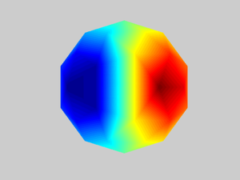
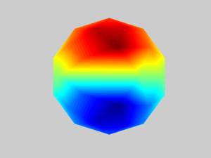
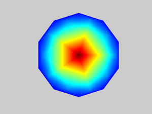
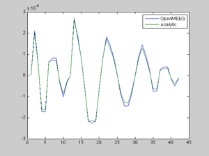

OpenMEEG for EEG from Fieldtrip demo script
This script provides an example of how to compute an EEG leadfield with OpenMEEG in the Fieldtrip toolbox.
This demo uses spherical head models and compares the OpenMEEG result with the analytical solution.
Contents
- Set the radius and conductivities of each of the compartments
- Description of the spherical mesh
- Create a set of electrodes on the outer surface
- Set the position of the probe dipole
- Create a BEM volume conduction model
- Compute the BEM
- Plot result
- Compute the analytic leadfield
- Evaluate the quality of the result using RDM and MAG
- Plot both OpenMEEG and analytic leadfield for visual inspection
Set the radius and conductivities of each of the compartments
addpath(cd) % Make sure current folder is in the path close all clear clc % % 4 Layers % r = [85 88 92 100]; % c = [1 1/20 1/80 1]; % 3 Layers r = [88 92 100]; c = [1 1/80 1]; % % 2 Layers % r = [100 92]; % c = [1 1/4]; % % % 1 Layers % r = [100]; % c = [1];
Description of the spherical mesh
[pnt, tri] = icosahedron42; % [pnt, tri] = icosahedron162; % [pnt, tri] = icosahedron642;
Create a set of electrodes on the outer surface
sens.pnt = max(r) * pnt;
sens.label = {};
nsens = size(sens.pnt,1);
for ii=1:nsens
sens.label{ii} = sprintf('vertex%03d', ii);
end
Set the position of the probe dipole
pos = [0 0 70];
Create a BEM volume conduction model
vol = []; for ii=1:length(r) vol.bnd(ii).pnt = pnt * r(ii); vol.bnd(ii).tri = tri; end vol.cond = c;
Compute the BEM
% choose BEM implementation (OpenMEEG, bemcp or dipoli) cfg.method = 'openmeeg'; vol = ft_prepare_bemmodel(cfg, vol); cfg.vol = vol; cfg.grid.pos = pos; cfg.elec = sens; grid = ft_prepare_leadfield(cfg); lf_openmeeg = grid.leadfield{1};
using the mesh specified in the input volume conductor determining source compartment (1) determining skin compartment (3) not using the isolated source approach using headmodel specified in the configuration using electrodes specified in the configuration projecting electrodes on skin surface combining electrode transfer and system matrix creating dipole grid based on user specified dipole positions 1 dipoles inside, 0 dipoles outside brain calculating leadfield for all positions at once, this may take a while... Assembling OpenMEEG DSM matrix Elapsed time is 0.048371 seconds.
Plot result
figure; triplot(pnt, tri, lf_openmeeg(:,1), 'surface'); figure; triplot(pnt, tri, lf_openmeeg(:,2), 'surface'); figure; triplot(pnt, tri, lf_openmeeg(:,3), 'surface');



Compute the analytic leadfield
vol_sphere.r = r; vol_sphere.c = c; lf_sphere = ft_compute_leadfield(pos, sens, vol_sphere);
Evaluate the quality of the result using RDM and MAG
rdms = zeros(1,size(lf_openmeeg,2)); for ii=1:size(lf_openmeeg,2) rdms(ii) = norm(lf_openmeeg(:,ii)/norm(lf_openmeeg(:,ii)) - lf_sphere(:,ii)/norm(lf_sphere(:,ii))); end mags = sqrt(sum(lf_openmeeg.^2))./sqrt(sum(lf_sphere.^2)); disp(['RDMs: ',num2str(rdms)]); disp(['MAGs: ',num2str(mags)]);
RDMs: 0.064093 0.064092 0.13532 MAGs: 1.0498 1.0498 1.0207
Plot both OpenMEEG and analytic leadfield for visual inspection
figure
plot([lf_openmeeg(:,1), lf_sphere(:,1)])
legend({'OpenMEEG' 'Analytic'})
